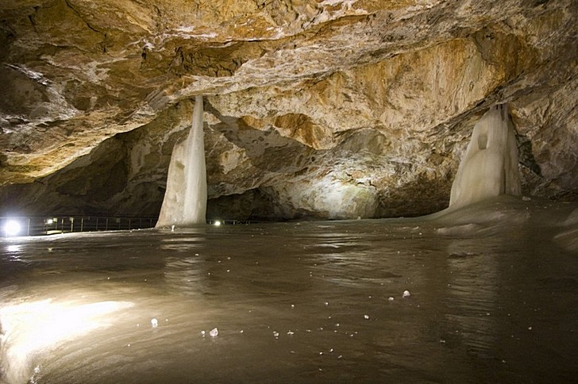

Словакия
География
Словакия расположена в Центральной Европе. На западе Словакия граничит с Чехией и Австрией, на севере – с Польшей, на востоке – с Украиной, а на юге – с Венгрией. Общая площадь Словакии – 49 000 квадратных километров, а общая длина государственной границы – 1 524 км.
Значительную часть территории Словакии занимают горы. Восточнее Братиславы находится Дунайская низменность. Весь север страны занимают Карпатские горы, возле границы с Польшей находятся Низкие и Высокие Татры. Самая высокая вершина Словакии - Герлаховски-Штит (2 655 метров).
История
Древние люди на территории современной Словакии жили еще в эпоху раннего палеолита. Римские легионы пришли в Словакию в 6 веке н.э. После падения Римской империи в Словакию вторгались германские племена и готы. Примерно в конце VIII – начале IX веков в Словакии поселились славянские племена, и было образовано Нитранское княжество, которое затем вошло в состав Великой Моравии, а позднее – в состав Венгрии.
Под ударами Османской империи в XVI веке Венгерское королевство распалось на три части, и в 1526 году Словакия вошла в состав Священной Римской империи.
Только после окончания Первой мировой войны Словакия получила независимость от Австро-Венгерской империи, и объединилась с Чехией (была образована Чехословакия).
В 1939 году Словакия, как, впрочем, вся территория Чехословакии, была оккупирована немецкими войсками.
После Второй мировой войны к власти в Чехословакии пришла Коммунистическая партия. В 1968 году войска стран Варшавского договора подавили попытки руководства Чехословакии построить «социализм с человеческим лицом», и вместо Александра Дубчека страной стал руководить Густав Гусак.
В 1998 году в Чехословакии Коммунистическая партия потеряла власть, и, в конце концов, в январе 1993 года эта страна распалась на два независимых государства Чехию и Словакию.
В 2004 году Словакию приняли в военный блок НАТО, а в 2009 году она стала членом Евросоюза.
Достопримечательности
Ясовская пещераЯсовская пещера является самой древней доступной к посещению пещерой в Словакии. Здесь были найдены скелеты таких вымерших животных, как пещерный медведь и пещерная гиена. Обзорный тур по этой сталактитовой пещере длится около 45 минут, а длина экскурсионного маршрута составляет больше 700 метров./ |
Водопад СкокДля любителей отдохнуть от городской суеты хорошо подойдет прогулка к водопаду Скок. Это живописное место находится рядом с озером Штрбске-Плесо, дойти от него к водопаду помогут специально маркированные туристические тропы. Этот маршрут считается легким, но все же, лучше одеть спортивную обувь. |
||
Национальный парк ТатрыТатры – старейший и наиболее известный национальный парк Словакии. Он расположен на севере страны и предлагает своим посетителям около 600 километров пешеходных туристических троп. В Татранском парке расположено несколько водопадов и множество озер. Здесь под защитой находятся как животные, так и растения. |
Добшинская ледовая пещераДобшинская ледовая пещера внесена в Список наследия ЮНЕСКО, а благодаря своим внушительным размерам является также самой большой ледяной пещерой Европы. Длина смотровой тропы составляет около 500 метров, а экскурсия длится примерно 30 минут. Даже летом в этой пещере сохраняется минусовая температура. |
 | |
Озеро Штрбске-ПлесоНеобычайно красивое озеро Штрбске-Плесо находится в Высоких Татрах. Здесь расположено множество отелей, а также несколько санаториев. На озере Штрбске-Плесо находится самый высокогорный горнолыжный курорт Словакии. Любителям пешеходных прогулок понравятся местные обустроенные туристические тропы. |
Город ЛевочаВ восточной части Словакии расположился город Левоча, ценимый туристами за свою богатую историю и прекрасно сохранившиеся древние здания. Приходская римско-католическая церковь Св. Якуба, построенная в XIV веке, местная Ратуша XVI века, а также Турзов дом эпохи Ренессанса относятся к самым посещаемым местам этого города. |
||
Бойницкий замокБойницкий замок располагается в одноименном городе и относится к самым ценным и старым сооружениям Словакии. Первые документы, где упоминается Бойницкий замок, датированы XII веком. Это строение еще называют Замком с привидениями из-за бесчисленного количества легенд. В мае здесь проводят Международный фестиваль духов и приведений. |
Замок ДевинВ месте слияния Дуная и Моравы на скале высотой 212 метров располагаются живописные руины замка Девин, первые основы которого были заложены еще в IX веке. Сегодня здесь можно посмотреть историческую экспозицию, исследовать остатки римской крепости, а еще посетить винодельческую деревню, расположенную прямо под стенами замка. |
Интересные факты
- В Словакии нет очень крупных городов. Даже в Братиславе живет всего полмиллиона человек, а мегаполисов-миллионников в этой стране и вовсе не найти. Прямо как, например, в Литве (см. интересные факты о Литве).
- До 1945 года в Вену из Братиславы можно было добраться на простом трамвае, да и сегодня между ними курсируют обычные пригородные электрички.
- Братислава граничит сразу с двумя странами — Австрией и Венгрией. Это единственная в мире столица с таким необычным расположением.
- Новогодние праздники в Словакии начинаются 5-го декабря, и вместо привычного доброго дедушки с бородой по стране бродят Крампусы (черти). А святой Николай приходит только на следующий день.
- В этой стране в 16 веке жила печально известная графиня Батори, прославившаяся кровавыми убийствами. Она считается самым страшным европейским маньяком среди женщин, ее даже внесли в Книгу рекордов Гиннесса как серийного убийцу №1. Говорят, что по коридорам Чахтинского замка до сих пор бродит ее неприкаянный дух.
- В костеле святого Якуба любопытные туристы могут найти самый большой деревянный алтарь в мире. Он более 18 метров в высоту и более 6 — в ширину.
- Считается, что в словацком городе Кремниц, точнее, в костеле Иоанна Крестителя, располагается географический центр всей Европы. И словаки готовы это доказать!
- Находящийся в Кошице Герлианский гейзер — единственный в Европе источник холодной артезианской воды. Извергается он примерно раз в два дня, точнее, через 32-36 часов.
- В Словакии есть деревня, которую при пересмотре границ поделили надвое — это Селменцы. Ранее вторая половина располагалась на территории СССР, сегодня — в Украине.
- Когда-то королем Мадагаскара был… словак, граф Мориц Беневский. Правда, недолго (см. интересные факты о Мадагаскаре).
- В честь Словакии названо небесное тело — астероид 1807.
- В армии Словакии всего 14 тысяч военнослужащих.
- Один из словацкий баров, «Lingo«, известен курильщикам всего мира: его стены украшает почти 4 тысячи зажигалок.
- Своеобразный местный символ — это собака породы чувач, которая с древних времен использовалась для выпаса стад в горах.
- Словакия также известна в мире благодаря хоккею — ее игроков знают все поклонники этого вида спорта, а “Зал хоккейной славы” в Братиславе обязательно входит в программу экскурсий по городу.